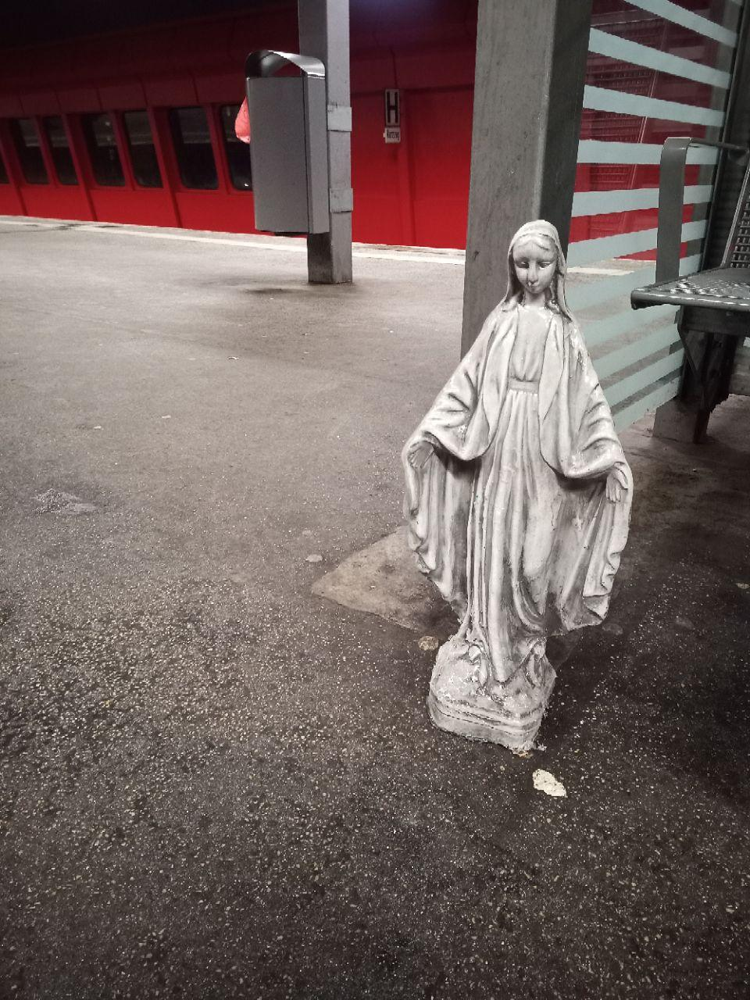
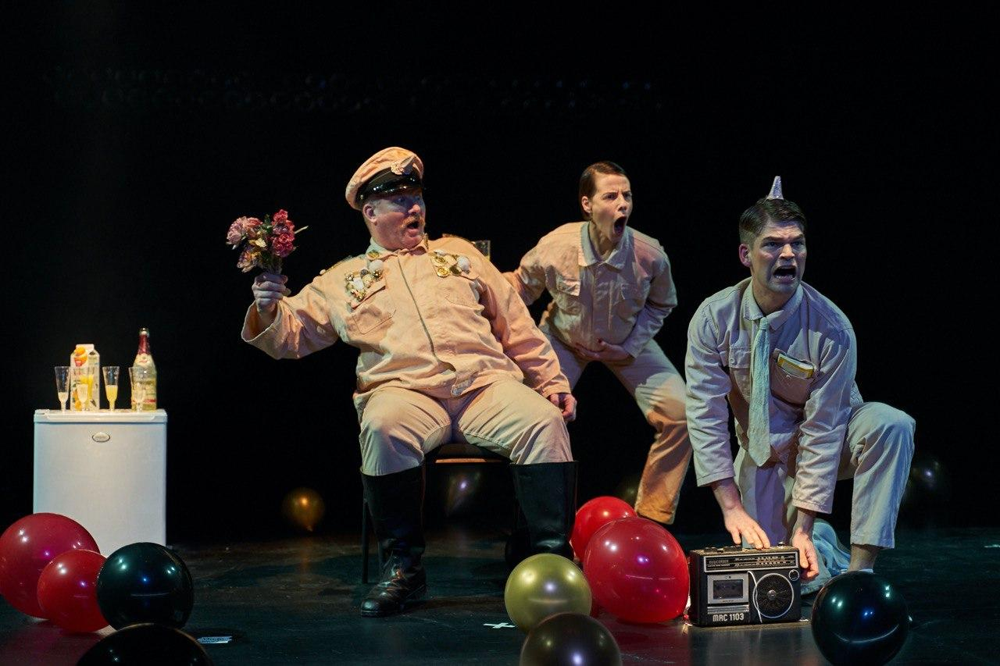
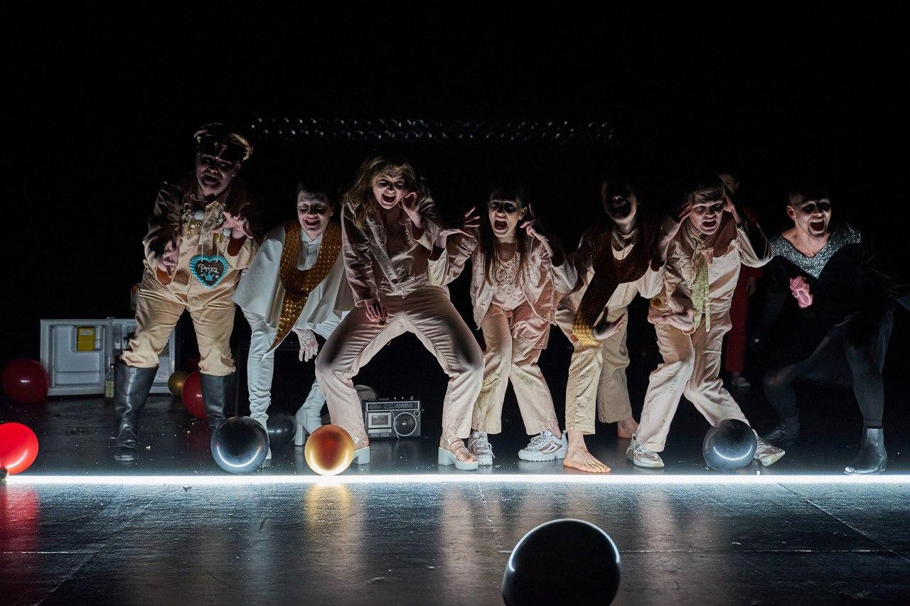
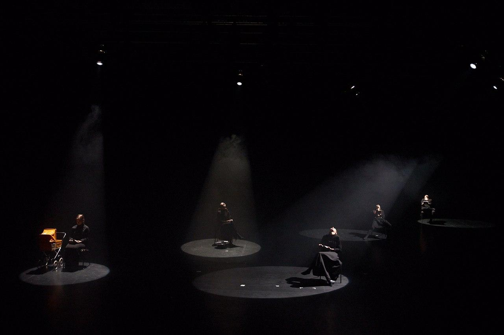

die Hamletmaschine
"Time is out of joint" says Shakespeare's Hamlet. "Time is out of joint" in every epoch, in every production, in every Twitter message. But the repetition of all-round disaster statements does not lead to resistance against the abyss in humans, but to a catastrophic habit. The world consequently appears as a dream in trauma, as a painting of surrealism. Otherwise it could not be grasped.
Die Hamletmaschine von Heiner Müller, a political dream-journey in five scenes by Helena Bennett





×